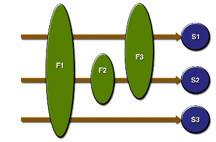

Filtering Requests and Responses
A filter is an object that can transform the header and content (or both) of a request or response. Filters differ from web components in that filters usually do not themselves create a response. Instead, a filter provides functionality that can be "attached" to any kind of web resource. Consequently, a filter should not have any dependencies on a web resource for which it is acting as a filter; this way it can be composed with more than one type of web resource. The main tasks that a filter can perform are as follows:
- Query the request and act accordingly.
- Block the request-and-response pair from passing any further.
- Modify the request headers and data. You do this by providing a customized version of the request.
- Modify the response headers and data. You do this by providing a customized version of the response.
- Interact with external resources.
Applications of filters include authentication, logging, image conversion, data compression, encryption, tokenizing streams, XML transformations, and so on.
You can configure a web resource to be filtered by a chain of zero, one, or more filters in a specific order. This chain is specified when the web application containing the component is deployed and is instantiated when a web container loads the component.
In summary, the tasks involved in using filters are
Programming Filters
The filtering API is defined by the
Filter,FilterChain, andFilterConfiginterfaces in thejavax.servletpackage. You define a filter by implementing theFilterinterface. The most important method in this interface isdoFilter, which is passed request, response, and filter chain objects. This method can perform the following actions:
- Examine the request headers.
- Customize the request object if the filter wishes to modify request headers or data.
- Customize the response object if the filter wishes to modify response headers or data.
- Invoke the next entity in the filter chain. If the current filter is the last filter in the chain that ends with the target web component or static resource, the next entity is the resource at the end of the chain; otherwise, it is the next filter that was configured in the WAR. The filter invokes the next entity by calling the
doFiltermethod on the chain object (passing in the request and response it was called with, or the wrapped versions it may have created). Alternatively, it can choose to block the request by not making the call to invoke the next entity. In the latter case, the filter is responsible for filling out the response.- Examine response headers after it has invoked the next filter in the chain.
- Throw an exception to indicate an error in processing.
In addition to
doFilter, you must implement theinitanddestroymethods. Theinitmethod is called by the container when the filter is instantiated. If you wish to pass initialization parameters to the filter, you retrieve them from theFilterConfigobject passed toinit.The Duke's Bookstore application uses the filters
HitCounterFilterandOrderFilterto increment and log the value of counters when the entry and receipt servlets are accessed.In the
doFiltermethod, both filters retrieve the servlet context from the filter configuration object so that they can access the counters stored as context attributes. After the filters have completed application-specific processing, they invokedoFilteron the filter chain object passed into the originaldoFiltermethod. The elided code is discussed in the next section.public final class HitCounterFilter implements Filter { private FilterConfig filterConfig = null; public void init(FilterConfig filterConfig) throws ServletException { this.filterConfig = filterConfig; } public void destroy() { this.filterConfig = null; } public void doFilter(ServletRequest request, ServletResponse response, FilterChain chain) throws IOException, ServletException { if (filterConfig == null) return; StringWriter sw = new StringWriter(); PrintWriter writer = new PrintWriter(sw); Counter counter = (Counter)filterConfig. getServletContext(). getAttribute("hitCounter"); writer.println(); writer.println("==============="); writer.println("The number of hits is: " + counter.incCounter()); writer.println("==============="); // Log the resulting string writer.flush(); System.out.println(sw.getBuffer().toString()); ... chain.doFilter(request, wrapper); ... } }Programming Customized Requests and Responses
There are many ways for a filter to modify a request or response. For example, a filter can add an attribute to the request or can insert data in the response. In the Duke's Bookstore example,
HitCounterFilterinserts the value of the counter into the response.A filter that modifies a response must usually capture the response before it is returned to the client. To do this, you pass a stand-in stream to the servlet that generates the response. The stand-in stream prevents the servlet from closing the original response stream when it completes and allows the filter to modify the servlet's response.
To pass this stand-in stream to the servlet, the filter creates a response wrapper that overrides the
getWriterorgetOutputStreammethod to return this stand-in stream. The wrapper is passed to thedoFiltermethod of the filter chain. Wrapper methods default to calling through to the wrapped request or response object. This approach follows the well-known Wrapper or Decorator pattern described in Design Patterns, Elements of Reusable Object-Oriented Software, by Erich Gamma et al. (Addison-Wesley, 1995). The following sections describe how the hit counter filter described earlier and other types of filters use wrappers.To override request methods, you wrap the request in an object that extends
ServletRequestWrapperorHttpServletRequestWrapper. To override response methods, you wrap the response in an object that extendsServletResponseWrapperorHttpServletResponseWrapper.
HitCounterFilterwraps the response in aCharResponseWrapper. The wrapped response is passed to the next object in the filter chain, which isBookStoreServlet. ThenBookStoreServletwrites its response into the stream created byCharResponseWrapper. Whenchain.doFilterreturns,HitCounterFilterretrieves the servlet's response fromPrintWriterand writes it to a buffer. The filter inserts the value of the counter into the buffer, resets the content length header of the response, and then writes the contents of the buffer to the response stream.PrintWriter out = response.getWriter(); CharResponseWrapper wrapper = new CharResponseWrapper( (HttpServletResponse)response); chain.doFilter(request, wrapper);CharArrayWriter caw = new CharArrayWriter(); caw.write(wrapper.toString().substring(0, wrapper.toString().indexOf("</body>")-1)); caw.write("<p>\n<center>" + messages.getString("Visitor") + "<font color='red'>" + counter.getCounter() + "</font></center>"); caw.write("\n</body></html>"); response.setContentLength(caw.toString().getBytes().length); out.write(caw.toString());out.close(); public class CharResponseWrapper extends HttpServletResponseWrapper { private CharArrayWriter output; public String toString() { return output.toString(); } public CharResponseWrapper(HttpServletResponse response){ super(response); output = new CharArrayWriter(); } public PrintWriter getWriter(){ return new PrintWriter(output); } }Figure 11-3 shows the entry page for Duke's Bookstore with the hit counter.

Figure 11-3 Duke's Bookstore with Hit Counter
Specifying Filter Mappings
A web container uses filter mappings to decide how to apply filters to web resources. A filter mapping matches a filter to a web component by name, or to web resources by URL pattern. The filters are invoked in the order in which filter mappings appear in the filter mapping list of a WAR. You specify a filter mapping list for a WAR by using
deploytoolor by coding the list directly in the web application deployment descriptor as follows:
- Declare the filter. This element creates a name for the filter and declares the filter's implementation class and initialization parameters.
- Map the filter to a web resource by name or by URL pattern.
- Constrain how the filter will be applied to requests by choosing one of the enumerated dispatcher options:
REQUEST: Only when the request comes directly from the clientFORWARD: Only when the request has been forwarded to a component (see Transferring Control to Another Web Component)INCLUDE: Only when the request is being processed by a component that has been included (see Including Other Resources in the Response)ERROR: Only when the request is being processed with the error page mechanism (see Handling Errors)You can direct the filter to be applied to any combination of the preceding situations by including multiple
dispatcherelements. If no elements are specified, the default option isREQUEST.If you want to log every request to a web application, you map the hit counter filter to the URL pattern
/*. Step 8. in The Example Servlets shows how to create and map the filters for the Duke's Bookstore application. Table 11-7 summarizes the filter definition and mapping list for the Duke's Bookstore application. The filters are matched by servlet name, and each filter chain contains only one filter.
HitCounterFilterfilters.HitCounterFilterBookStoreServletOrderFilterfilters.OrderFilterReceiptServlet
You can map a filter to one or more web resources and you can map more than one filter to a web resource. This is illustrated in Figure 11-4, where filter F1 is mapped to servlets S1, S2, and S3, filter F2 is mapped to servlet S2, and filter F3 is mapped to servlets S1 and S2.

Figure 11-4 Filter-to-Servlet Mapping
Recall that a filter chain is one of the objects passed to the
doFiltermethod of a filter. This chain is formed indirectly via filter mappings. The order of the filters in the chain is the same as the order in which filter mappings appear in the web application deployment descriptor.When a filter is mapped to servlet S1, the web container invokes the
doFiltermethod of F1. ThedoFiltermethod of each filter in S1's filter chain is invoked by the preceding filter in the chain via thechain.doFiltermethod. Because S1's filter chain contains filters F1 and F3, F1's call tochain.doFilterinvokes thedoFiltermethod of filter F3. When F3'sdoFiltermethod completes, control returns to F1'sdoFiltermethod.
All of the material in The J2EE(TM) 1.4 Tutorial is copyright-protected and may not be published in other works without express written permission from Sun Microsystems.